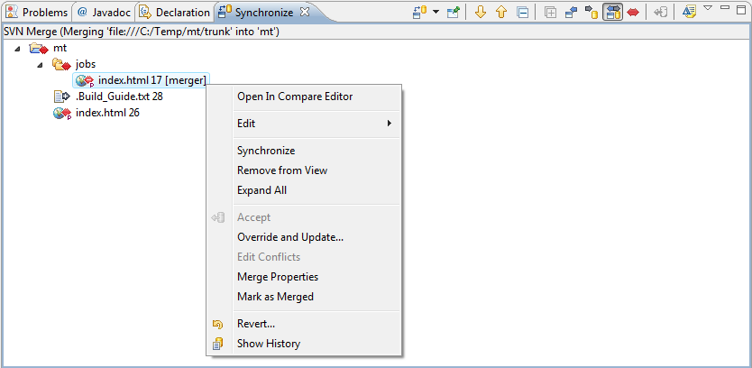

|
|
|
Merging means creating a version by blending different revisions of resources. To start merging click 'Team>Merge...' menu item of the resource pop-up menu, 'Merge...' menu item of the SVN main menu group or on the 'Merge...' button on the 'SVN Toolbar'. The Merge Dialog will appear and to perform operation user should follow its instructions and fill needed properties.
|
Note: |
If there were some conflicts during the merge operation cycle SVN® merges what it can and notify the user about the conflict. Then three file are created: 'name'.tmp (copy of the user's local file before update), 'name'.tmp2 (copy of the first revision file) and 'name'.tmp3 (copy of the second revision file). So the edit conflicts action must be run to resolve conflicts. |
If the option of interactive merge is enabled then the merge results are shown in the 'SVN Merge View'. The changes that can't be done by Subversion while merge are also shown in this view and can be merged or skipped manually.
